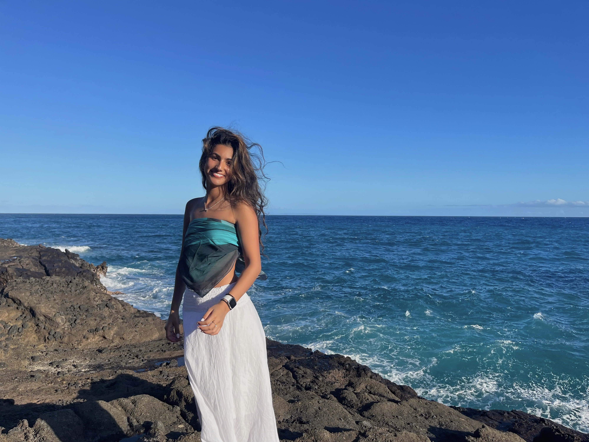

Hi! I'm Ria Chugh, and I'm from a suburb outside of Chicago called Naperville. I'm currently a sophomore at UW Madison and I am studying Biomedical Engineering. Ever since growing up, my family has always had a passion for traveling. My parents have gifted my brother and me trips and experiences over materialistic gifts, as we both value memories over physical items. In the 20 years I've been alive, I am very grateful to say that I've seen several different beautiful countries, states, and islands. I am passionate about learning different cultures and seeing the world. I created this website to share my experiences and help others plan their trips to see the amazing places the world has to offer.
